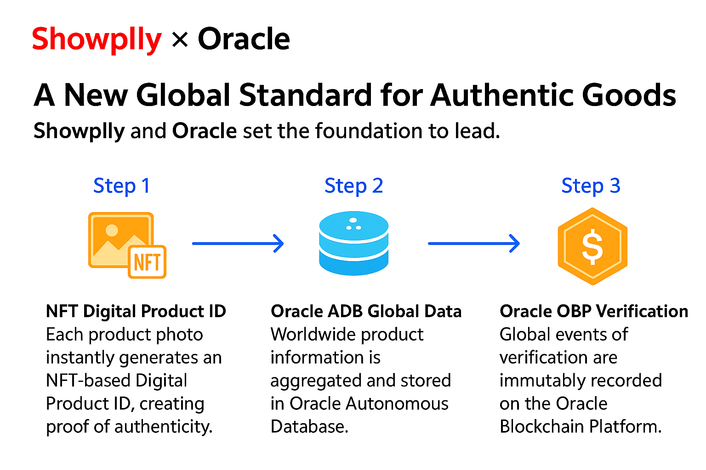
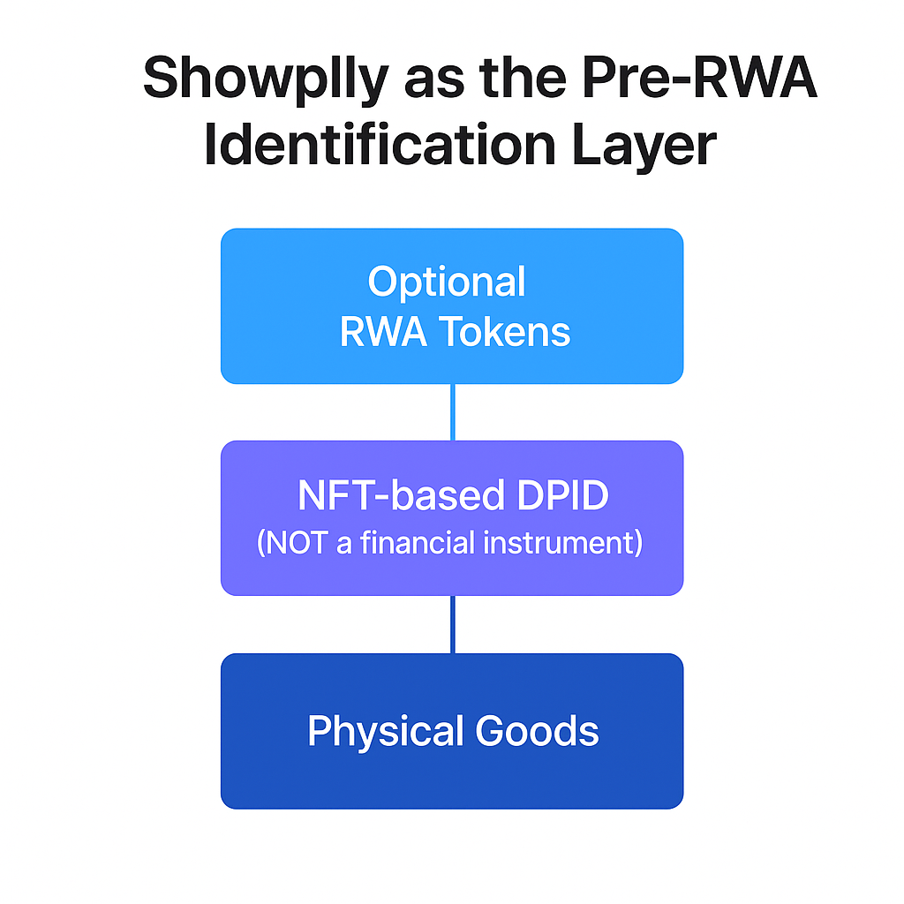
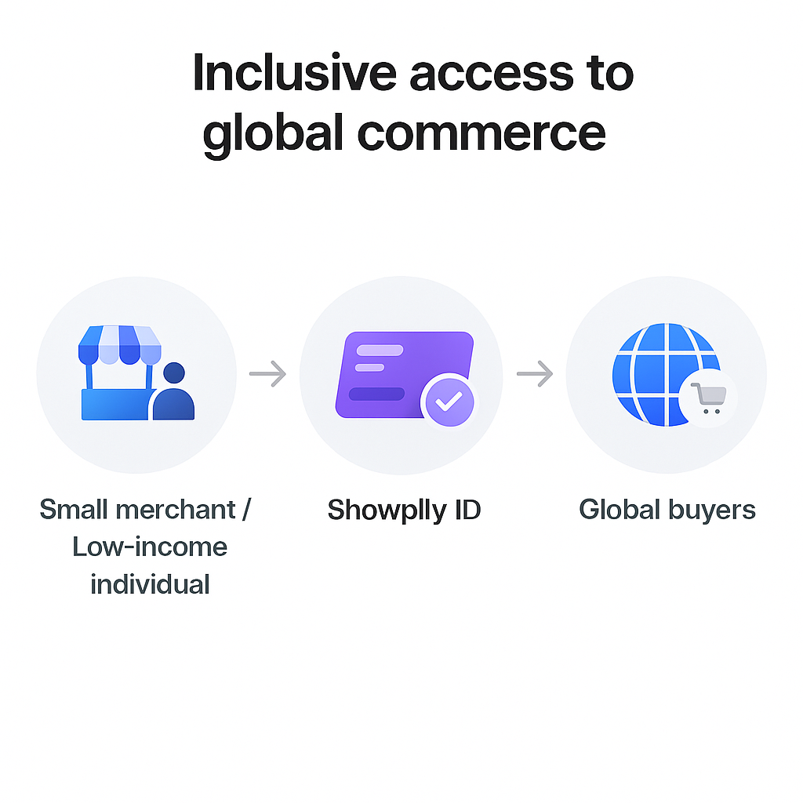

The world’s first NFT-based
Digital Product Identity Layer for Global Commerce
Powering authenticity, smart customs, and borderless commerce.
Every physical product receives a unique NFT-based Digital Product ID (DPID) — the world’s first identification layer that enables provable authenticity, correct customs duties, and a world where anyone can become a seller simply by posting a photo.

Conceptual illustration by Showplly (founder × Oracle collaboration motif).
The internet was never designed to prove what’s real.
E-commerce made global trade frictionless — and just as frictionless for fraud. No shared, verifiable layer exists to prove that a physical product is genuine, fairly declared at customs, and traded along a clean supply chain.
- Counterfeit goods cross borders at scale, with little shared intelligence.
- Under-valuation and false declarations erode customs revenues.
- Each marketplace keeps its own siloed logs — there is no global authenticity log.
- Consumers and regulators see only a “front-end store,” not the truth of the product.
Customs, tax authorities, and industry bodies estimate hundreds of billions of dollars lost each year to under-invoicing, tariff misclassification, and counterfeit trade. The problem is systemic — not just a few bad actors.
Showplly’s role is to give each physical item an unforgeable, audit-ready identity that can be shared across logistics, marketplaces, and regulators — without forcing end-users into Web3 complexity.
Source: Illustrative split based on estimates from OECD, WCO and industry reports (indicative, not official statistics).
Source: Illustrative customs revenue loss ranges adapted from Global Financial Integrity and OECD trade mis-invoicing studies (indicative only).
Every product becomes a verifiable digital identity.
Showplly is an authenticity infrastructure that links physical goods with NFT-based Digital Product IDs, anchored on Oracle’s enterprise platform. For the user, it still feels like a familiar e-commerce experience.
- Generates a unique NFT Digital Product ID (DPID) for each uploaded product photo.
- Stores authenticity & trade data in Oracle Autonomous Database (ADB).
- Records verification & logistics events on Oracle Blockchain Platform (OBP).
From brand registration through cross-border shipping to resale, each lifecycle event accumulates on the same product identity — not on fragmented, platform-specific logs.
Showplly and Oracle set the foundation to lead. Each uploaded photo instantly generates an NFT-based Digital Product ID and expands global authenticity data in Oracle ADB, while every transaction is immutably recorded on Oracle OBP.
Conceptual architecture sketch for Showplly × Oracle PoC (for discussion, not an official Oracle system diagram).
The only place the world’s first authenticity layer can run at global scale.
Showplly was designed from day one to operate at Oracle scale. Oracle provides the infrastructure to make a global authenticity and customs-integrity layer feasible — for brands, logistics partners, customs, and marketplaces.
Optimized for physical goods, cross-border trade, and customs integrity, with a data model built on Oracle ADB and OBP.
Product, logistics, warranty, and customs-related data aggregated in Oracle Autonomous Database — the single source of truth for every DPID.
Oracle OBP provides tamper-evident verification logs; Oracle’s analytics & AI stack unlock pattern detection, risk scoring, and smart customs insights on top.
Web2 UX, Web3-grade security.
Showplly bridges today’s e-commerce expectations with tomorrow’s decentralized commerce infrastructure — without forcing users to manage wallets or seed phrases.
Users browse and buy like any modern marketplace. No wallet setup, no seed phrases, no crypto onboarding required.
NFT Digital Product IDs live entirely in the backend. Buyers and sellers simply see “verified product” signals and authenticity scores.
Power users and partners can move IDs on-chain, connect wallets, and interoperate with other Web3 ecosystems when needed.
Where Showplly generates ROI from day one.
Authenticity certificates travel with each shipment. Customs and product data stay cryptographically tied to each item.
AI-assisted classification and risk scoring. Mismatches between declarations and real goods become visible and auditable.
Track items from manufacturer to consumer on a single authenticity log, accessible to multiple stakeholders.
Pre-owned products can prove origin, authenticity, and service history — unlocking new business for brands and platforms.
Before tokenization, the world needs identification.
Showplly is the world’s first “Pre-RWA” identification layer for physical goods. Before any asset — including securities and real estate — can be tokenized as RWA, it must first be uniquely and verifiably identified.
The NFT-based Digital Product ID (DPID) provides that missing layer: a universal, non-financial, authenticity-first identifier that can later be linked to financial tokens where regulations allow.
In other words, Showplly’s identification layer becomes the foundation on which future RWA models for products, rights, and even financial instruments can safely stand.
Showplly does not itself issue financial instruments. Instead, it provides the world’s first universal, authenticity-focused identification layer that RWA platforms can build upon.
Conceptual illustration by Showplly — positioning DPID as a Pre-RWA identification layer (non-financial).
Lowering barriers to global commerce.
Showplly enables small merchants in developing regions — and economically disadvantaged individuals everywhere — to participate in global trade simply by posting a product photo.
No warehouse, no complex paperwork, no gatekeeping by centralized platforms. The NFT-based Digital Product ID and Oracle-backed infrastructure provide the trust layer that individuals alone could never build.
By combining authenticity, smart customs, and open access, Showplly aims to make global commerce fairer — not only for large brands, but also for the smallest and most vulnerable participants in the economy.
When “uploading a photo” is enough to enter the global marketplace, the internet finally begins to serve as a truly open economic rail — backed by verifiable, Oracle-grade authenticity data.
Conceptual illustration by Showplly — inclusive access for small merchants and low-income individuals to reach global buyers.
One product view. Many layers of trust.
Showplly is not just a marketplace — it is a protocol and data infrastructure for authenticated commerce, with each physical item represented as a verifiable NFT-based identity.
What we are looking for
Showplly is currently not seeking fundraising.
At this stage, we are looking for:
- Technical validation of the pre-financial identity layer architecture
- Strategic feedback on enterprise adoption and interoperability
- Discussion on PoC collaboration possibilities with Oracle technologies
Showplly is designed as a foundational identity layer positioned before financial settlement, enabling authenticity, provenance, and ownership to be established independently of payment, custody, or token issuance.
We believe this positioning makes Showplly highly complementary to Oracle’s cloud, data, and enterprise integration strengths.
Patented NFT-based structure optimized for physical goods and real-world trade. Each DPID anchors product metadata, images, logistics logs, customs declarations, and verification events.
Authenticity data lake on Oracle ADB, verification logs on OBP, and APIs for customs, logistics, and marketplace partners to connect and query DPIDs across the global network.
About the founder.
Showplly is led by a founder with deep experience in global hardware, logistics, and cross-border commerce — including the pain of counterfeit goods, opaque logistics, and fragmented data first-hand.
Over 30 years in computer hardware, distribution, and global supply chains, he has seen how counterfeit products and mis-declared shipments damage trust and profitability for honest brands and retailers.
Yuzuru designed Showplly as the missing “authenticity layer” of the internet — and aligned the architecture from day one with Oracle’s data and blockchain platforms.
The underlying technology has been granted patent protection in Japan, with PCT filed for international coverage. A detailed technical whitepaper and architecture deck are available under NDA.
Contact: founder@showplly.com